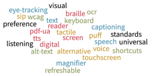
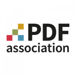

The PDF Association’s work to advance accessibility |
 |
A major focus of the PDF Association’s work is to increase awareness and adoption of standards and best practices for accessibility.
About the author: The PDF Association staff delivers a vendor-neutral platform for PDF’s stakeholders, facilitating the development of open specifications and ISO standards for PDF technology. Staff members include: Alexandra Oettler (Editor), Betsy Fanning ... Read more
|  |
January 19, 2024 |
This article surveys the PDF Association’s focus on accessibility, from advancing accessible PDF to promoting accessibility in ISO standards documents, and ensuring broad access and opportunity for all within its own operations.
Founded in 2006 as the “PDF/A Competence Center”, since 2010 the organization has grown to encompass the PDF format as a whole. Today, the PDF Association provides a vendor-neutral meeting-place for PDF technology stakeholders while working to increase awareness and adoption of ISO-standardized PDF technology, including for accessibility.
In 2012, after eight years of development led by PDF Association members, ISO published ISO 14289-1, better known as PDF/UA (Universal Accessibility), to define requirements for the use of PDF’s Tagged PDF feature as defined for PDF 1.7 (2008). PDF/UA-1 was published in the early stages of the development of PDF 2.0, which began in 2009, and the lessons gained in creating PDF/UA-1 were put to use in the redevelopment of Tagged PDF in PDF 2.0.
The PDF Association caused PDF/UA-1 to be the first ISO standard worldwide, on any subject, to itself meet standards for accessibility. As a tagged and validated PDF file, ISO 14289-1 thus conformed, not only with WCAG 2.0, but also with itself. 😉
Also in 2012, the PDF Association celebrated the publication of PDF/UA by supporting development of NVDA, the free and open source screen reader.
Since the publication of PDF/UA-1 the PDF/UA TWG and PDF Accessibility LWG have developed a variety of resources to assist developers, end users and other stakeholders interested in driving accessibility in PDF content. The results of these efforts include:
Led by the then-chairman of the PDF Association, callas software’s Olaf Drümmer, one of PDF 2.0’s most significant upgrades was the re-development of the section defining Tagged PDF, setting the stage for PDF/UA-2.
PDF accessibility is one of several use-cases for “reuse” of tagged PDF. Other use-cases include expression as HTML, copy and paste functionality, content extraction for use by search engines, and more.
Following publication of the 2nd edition of PDF/UA-1 in 2014, the PDF Association’s PDF/UA Technical Working Group, later joined by the PDF Reuse TWG, began to develop a new specification for tagged PDF based on PDF 2.0.
Intended for publication by the PDF Association, "Well-Tagged PDF (WTPDF): Using Tagged PDF for Accessibility and Reuse in PDF 2.0" was developed in full alignment with ISO TC 171 SC 2 WG 9, the working group developing ISO 14289-2, to ensure its compatibility with the forthcoming ISO standard for accessible PDF 2.0 files.
As mentioned above, the text of PDF/UA-2 (to be published in Q1 of 2024) was developed by PDF Association working-groups working in coordination with ISO’s TC 171 SC 2 WG 9. Comments from the ISO committee members were fed back into the PDF Association's development process to ensure 100% alignment between the new ISO standard and the PDF Association’s specification for Well-Tagged PDF.
Building on PDF 2.0, PDF/UA-2 is a dramatic improvement on PDF/UA-1. For the first time it includes comprehensive provisions for annotations and structure element attributes, both of which are mostly absent in PDF/UA-1. PDF/UA-2 also leverages PDF 2.0 in many other ways, from the new Namespaces feature that allows for integration of PDF 1.7 and PDF 2.0 structure elements in the same document to MathML, the new Artifact structure element type, and much more.
Since 2014 the PDF Associations’s PDF/UA Technical Working Group has operated in close coordination with the ISO working group responsible for PDF/UA, TC 171 SC 2 WG 9. Starting in 2021, members of these groups came together to conduct an assessment of ISO’s products and procedures from the accessibility perspective. This work culminated in 2022 with delivery to ISO of a report by the TC 171 SC 2 Chair Advisory Group (CAG) identifying areas of concern and making recommendations for enhancements. The PDF Association continues working actively with ISO to identify and mitigate accessibility issues with ISO’s document production and committee workflows.
As of early 2024 the PDF Association operates 20 active Working Groups. Of these, 4 are directly engaged in advancing accessibility in PDF technology while 2 other groups are dedicated to subjects that track closely with accessibility.
PDF/UA TWG Together with the PDF Reuse TWG, this WG led development of the specification for Well-Tagged PDF, the which is mirroned in the file format requirements in ISO 14289-2 (PDF/UA-2).
PDF Accessibility LWG This WG develops techniques for accessible PDF, with its first set of “fundamental” techniques slated for publication in Q1 2024. In October 2023 the working group published an example of what is to come.
PDF/UA Processor LWG This WG focuses on recommendations and requirements for software engaged in processing PDF/UA files. As of 2024 the group is focused on examining accessibility API role mappings for HTML elements and WAI-ARIA / DPub attributes with the objective of mapping these features to their functional equivalents in PDF. Read more about their progress.
LaTeX Project LWG The LaTeX Project is working to enhance the LaTeX typesetting system used by academic and technical authors worldwide to deliver complete support for the creation of structured document formats, in particular, Tagged PDF and PDF/UA. This LWG provides a workspace for LaTeX developers andPDF experts to share their expertise to advance both LaTeX and Tagged PDF
PDF Reuse TWG In addition to its collaboration with the PDF/UA TWG on the development of Well-Tagged PDF and PDF/UA-2, this WG focuses on general reuse of Tagged PDF to deliver advanced support for conversion to HTML, copy and paste applications and other instances of content reuse.
Deriving HTML from PDF TWG Author of the usage specification “Deriving HTML from PDF” published in 2019, this working group focuses on leveraging Tagged PDF for this common content reuse case.
PDF’s core value proposition implies extreme flexibility in the representation of content. Accordingly, although accessible PDF has been possible for a long time, achieving it still offers challenges, depending largely on document complexity. Accordingly, the PDF Association will remain committed to developing resources that help all stakeholders, software developers, institutions and end users alike, to develop software to support accessible PDF, set policies for publication and acquisition, and author PDF files that meet accessibility standards.